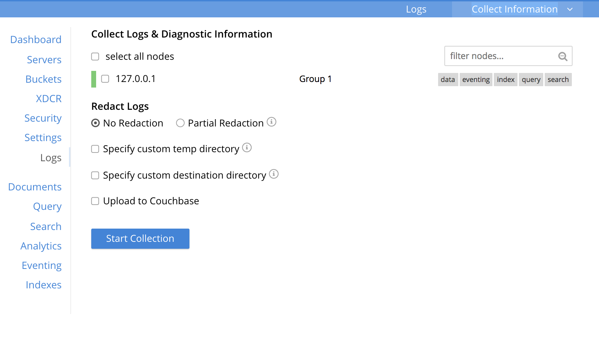

Using Logs
Logs allow you to identify activity and errors within the Couchbase cluster. You can view available logs and collect logs and diagnostic information from either all nodes or selected nodes in a cluster. You can also upload the collected logs directly to Couchbase Support with your data (customer name, ticket number) for easy tracking.
From the Couchbase Web Console > select Logs. The two tabs are available: Logs and Collect Information.
The Logs tab displays available logs by the Event, Module Code, Server Node, and Time.
Collect Logs using the UI
To collect logs using the Web Console:
-
From the Couchbase Web Console > Logs > select the Collect Information tab.
-
Select All nodes or Selected Nodes option from where you want to collect logs and diagnostic information. If you choose Selected Nodes, select the appropriate check boxes of the nodes in a cluster.
-
Select the Upload to Couchbase check box to upload the collected logs directly to Couchbase Support with your data for easy tracking. If selected, enter the following information:
-
Enter the server address in the Upload to Host box.
-
Enter the name of the customer in the Customer Name field.
-
Enter the ticket number in the Ticket Number field.
-
-
Click Start Collection to start the collection.
Log Types
Couchbase Server creates a number of different log files depending on the components of the system that produce the error and the level and severity of the reported problem.
| Platform | Location |
|---|---|
Linux |
/opt/couchbase/var/lib/couchbase/logs |
Windows |
C:\Program Files\Couchbase\Server\var\lib\couchbase\logs Assumes default installation location |
Mac OS X |
/Users/couchbase/Library/Application Support/Couchbase/var/lib/couchbase/logs |
The table below summarizes the log files for the different components in Couchbase:
| File | Log Contents |
|---|---|
|
Security audit log for administrators. |
|
Troubleshooting log for the babysitter process which is responsible for spawning all Couchbase Server processes and respawning them where necessary. |
|
Troubleshooting log for the couchdb subsystem which underlies map-reduce and spatial views |
|
Used to pass service crash reports from the babysitter to the |
|
Debug-level troubleshooting for the cluster management component. |
|
Error-level troubleshooting log for the cluster management component. |
|
Troubleshooting logs for the full-text search service. |
|
Troubleshooting log for the cross datacenter replication (XDCR) component used in Couchbase Server versions after 4.0. |
|
The admin access log records server requests (including administrator logins) to the REST API or Couchbase Server web console. It is output in common log format and contains several important fields such as remote client IP, timestamp, GET/POST request and resource requested, HTTP status code, and so on. |
|
The admin access log records internal server requests (including administrator logins) to the REST API or Couchbase Server web console. It is output in common log format and contains several important fields such as remote client IP, timestamp, GET/POST request and resource requested, HTTP status code, and so on. |
|
Troubleshooting log for the indexing and storage subsystem. |
|
Info-level troubleshooting log for the cluster management component. |
|
JavaScript and other view-processing errors are reported in this file. |
|
Contains information relating to the core memcached component, including DCP stream requests and slow operations. |
|
Troubleshooting log for the metakv store, a cluster-wide metadata store. |
|
Contains information related to starting up the CouchDB subsystem. |
|
Troubleshooting log for the projector process which is responsible for sending appropriate mutations from Data nodes to Index nodes. |
|
Contains progress and crash reports for the Erlang processes. Due to the nature of Erlang, processes crash and restart upon an error. |
|
Troubleshooting log for the ssl proxy spawned by the cluster manager. |
|
Contains periodic statistic dumps from the cluster management component. |
|
Troubleshooting log for the view engine, predominantly focussing on the changing of partition states. |
|
Troubleshooting log for the cross datacenter replication (XDCR) component used in Couchbase Server versions prior to 4.0. |
|
Error-level troubleshooting log for the cross datacenter replication (XDCR) component used in Couchbase Server versions prior to 4.0. |
|
Trace-level troubleshooting log for the cross datacenter replication (XDCR) component used in Couchbase Server versions prior to 4.0. Unless trace-level logging is explicitly turned on this log is empty. |
Some logs are automatically rotated after a certain fixed size. For example, individual log files are automatically numbered with the number suffix incremented for each new log, and with a maximum of 20 files per log. Individual log file sizes are limited to 10MB by default.
For other logs, when a log file reaches 40MB it will be rotated and compressed. The file will keep 5 rotations (the current rotation plus four compressed rotations). Here is an example list of log files:
-rw-rw---- 1 couchbase couchbase 12M Feb 2 16:15 couchdb.log
-rw-rw---- 1 couchbase couchbase 4.8M Feb 2 16:13 couchdb.log.1.gz
-rw-rw---- 1 couchbase couchbase 4.5M Jan 30 17:35 couchdb.log.2.gz
-rw-rw---- 1 couchbase couchbase 3.9M Jan 30 17:34 couchdb.log.3.gz
-rw-rw---- 1 couchbase couchbase 5.7M Jan 30 17:30 couchdb.log.4.gz
In this list, the oldest file has the largest number.
To provide custom rotation settings for each component, add the following to your static_config file:
{disk_sink_opts_disk_debug,
[{rotation, [{size, 10485760},
{num_files, 10}]}]}.
This will rotate the debug.log at 10MB and keep 10 copies of the log (the current log and 9 compressed logs).
Log Redaction
You can use logs for multiple purposes ranging from security, monitoring, and diagnostics. Suppression of sensitive data such as personally identifiable information (PII), hostnames, internal asset information, credit card details, during the logging operation is termed as log redaction. Organizations implement log redaction as part of their legal compliance and security risk mitigations. Couchbase Server provides a capability to redact sensitive user data from getting captured in the logs. All sensitive data are scrubbed and gets removed from the log files. Post redaction, log files can be shared for troubleshooting without disregarding any regulatory compliance.
To enable log redaction:
-
From the Couchbase Web Console > Logs page > select the Collect Information.
 -
Select all nodes or use the filter nodes… option to select nodes from where you want to collect logs and diagnostic information.
-
From the Redact Logs pane select No Redaction or Partial Redaction option.
-
No Redaction: Select this option to enable capturing of log data that may include any sensitive information.
-
Partial Redaction. Select this option to enable abstraction of sensitive information in the log files.
When the Partial Redaction option is selected, Couchbase automatically stores two types of files, one with redaction and another without data redaction. Use the log file without data redaction for internal troubleshooting purposes, and in case you are using the Upload to Couchbase log option, use the log file with data redaction. The above information message also gets displayed in the Web console UI.
UI Message:"Couchbase Server will collect and save a redacted log file at the location you specify, but also save an unredacted version which could be useful for further troubleshooting. If you use the "Upload to Couchbase" feature below, ONLY the redacted log will be uploaded."
-
Manage Logs
You can change log file location and change log levels.
Changing Log File Location
The default file log location is /opt/couchbase/var/lib/couchbase/logs, however, if you want to change the default log location to a different directory, change the log file configuration option.
| To implement a log file location change (from the default), you must be log in as either root or sudo and the Couchbase service must be restarted. |
To change the log file configuration:
-
Log in as
rootorsudoand navigate to the directory where you installed Couchbase. For example:/opt/couchbase/etc/couchbase/static_config -
Edit the static_config file and change the
error_logger_mf_dirvariable to a different directory. For example:{error_logger_mf_dir, "/home/user/cb/opt/couchbase/var/lib/couchbase/logs"} -
Restart the Couchbase service. After restarting the Couchbase service, all subsequent logs will be in the new directory.
Changing Logging Levels
The default logging level for all log files are set to debug except for couchdb, which is set to info. If you want to change the default logging level, modify the logging level configuration options.
You can change the configuration using one of the following ways:
-
persistent
-
dynamic (on the fly, without restarting).
Changing logging levels to be persistent
Logging levels can be changed so that the changes are persistent, that is, the changes continue to be implemented should a Couchbase Server reboot occur.
| To implement logging level changes, the Couchbase service must be restarted. |
To change logging levels to be persistent:
-
Log in as
rootorsudoand navigate to the directory where you installed Couchbase. For example:/opt/couchbase/etc/couchbase/static_config -
Edit the static_config file and change the desired log component. For example, parameters with the
loglevel_prefix set the logging level. -
Restart the Couchbase service.
After restarting the Couchbase service, logging levels for that component will be changed.
Changing logging levels dynamically
If logging levels are changed dynamically and if a Couchbase server reboot occurs, then the changed logging levels revert to the default.
To change logging levels dynamically, execute a curl POST command using the following syntax:
curl -X POST -u adminName:adminPassword HOST:PORT/diag/eval \
-d ‘ale:set_loglevel(<log_component>,<logging_level>).’
where,
-
log_component- The default log level (exceptcouchdb) isdebug; for examplens_server. The available loggers arens_server,couchdb,user,Menelaus,ns_doctor,stats,rebalance,cluster, views,mapreduce_errors, xdcr anderror_logger. -
logging_level- The available log levels aredebug,info,warn, anderror.curl -X POST -u Administrator:password http://127.0.0.1:8091/diag/eval \ -d 'ale:set_loglevel(ns_server,error).
Collect Logs using the CLI
You can use the CLI command cbcollect_info, which is one of the most important diagnostic tools used by Couchbase technical support.
The other three CLI commands you can use to start and stop log collection and to read the log collection status:
Collect Logs using the REST API
The Logs REST API provides the endpoints for retrieving log and diagnostic information.
To retrieve log information use the /diag and /sasl_logs REST endpoints.